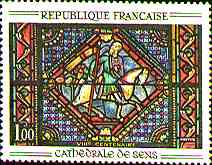
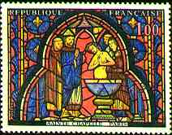
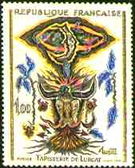
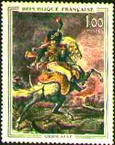
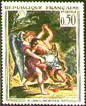
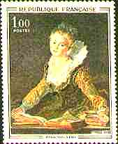
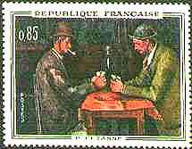
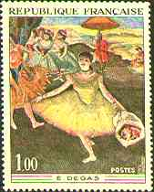
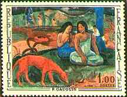
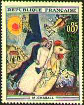

The French Art Series (also known under the name Musée imaginaire - Imaginary Museum) started in 1961 with a set of four stamps, reproducing the works of Braque, Matisse, Cezanne and R. de la Fresnaye. Using a big format (36.85 x 48 mm) and characterized by an excellent typographic quality (printed for the first time in such a big format in TD6 = taille-douce six couleurs), this series gave the start of a new era in the domain of the reproduction of art on stamps. In over 35 years of existence, all areas were covered, from cavern paintings in Lascaux (SG 1786) and Egyptian Art (SG 2111) to the contemporary artists, who created works to be reproduced on the postage stamps. Now let the stamps speak for themselves and let’s enjoy their perfection.
Stained Glass Windows
Notre-Dame Cathedral, ParisFrance · 1964Gothic stained glass is celebrated for its luminous colours and narrative imagery.

Sens CathedralFrance · 1965A window from one of France’s early Gothic cathedrals.

Sainte-Chapelle, ParisFrance · 1966The royal chapel is renowned for its towering thirteenth-century stained-glass windows.Chartres CathedralFrance · 1963Chartres is celebrated for its medieval stained glass, especially its deep blues.
Email and Tapestries
Champlevé enamelFrance · 1964Champlevé is an enamel technique in which coloured enamel fills recesses in a metal surface.The Lady and the UnicornFrance · 1964A celebrated late-medieval tapestry cycle associated with the senses.The Apocalypse tapestryFrance · 1965The monumental medieval tapestry cycle at Angers depicts scenes from the Book of Revelation.

Jean Lurçat — tapestryFrance · 1966Lurçat helped revive modern tapestry-making in twentieth-century France.
Classical Period

Théodore GéricaultFrance · 1962Géricault was a major painter of French Romanticism.Jean-Antoine WatteauFrance · 1973Watteau is associated with the poetic fêtes galantes of the Rococo period.

Eugène DelacroixFrance · 1963Delacroix was a leading figure of French Romantic painting.

Jean-Honoré FragonardFrance · 1972Fragonard is known for lively, intimate scenes of the Rococo era.
Modern Period - 1
Vincent van GoghFrance · 1979The Dutch Post-Impressionist artist spent important creative years in France.Henri MatisseFrance · 1961Matisse helped establish Fauvism through his expressive use of colour.

Paul CézanneFrance · 1961Cézanne’s exploration of form influenced modern painting.Pierre-Auguste RenoirFrance · 1968Renoir was a leading Impressionist, celebrated for light and colour.
Modern Period - 2

Edgar DegasFrance · 1970Degas often portrayed dancers, performers and modern urban life.

Paul GauguinFrance · 1968Gauguin developed a distinctive Post-Impressionist use of colour and symbolism.Raoul DufyFrance · 1965Dufy is known for his bright palette and lively, decorative compositions.

Marc ChagallFrance · 1963Chagall combined memory, folklore and dreamlike imagery in his art.
First Day Covers
Maurice Utrillo — Le Lapin AgileParis · 3 March 1983First-day cover featuring the Montmartre cabaret immortalised by Utrillo.Georges Rouault — Songe creuxParis · 6 May 1971First-day cover commemorating a work by the French painter Georges Rouault.